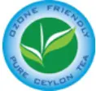
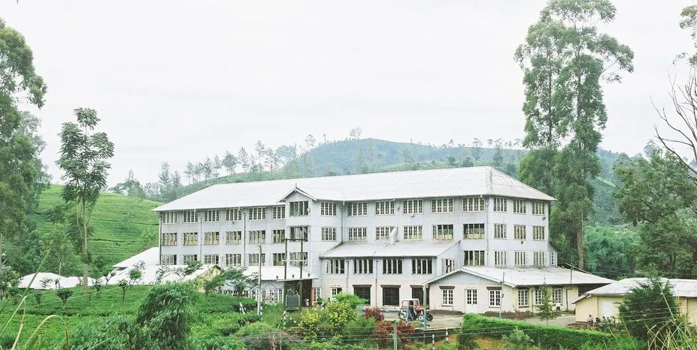

Introduced in 1867, Ceylon Tea has grown to be the top agriculture export in Sri Lanka and provides direct and indirect employment to nearly 1 million people while around 4% of the country’s land area is covered in tea plantations amounting to nearly 203000 hectares. Sri Lanka is an island made for tea. The country produces tea throughout the year and the total tea production is about 340 million kilograms per annum.
The finest cup of tea, guaranteed.
In over one hundred and fifty years, the name Ceylon had become synonymous with the world’s finest tea. The legendary lion of the Sri Lankan flag was introduced to the Ceylon Tea logo, to guard this commitment – the symbol of quality.
To earn this validation:
The tea must be exclusively packed in Sri Lanka. Overseas packers, importers and distributors cannot use the Lion logo on their packaging, even if the contents are 100% Sri Lankan.
During the 1970s, scientists studying Earth’s atmosphere found that ozone was vanishing from its upper levels. The cause of this depletion was quickly identified as chlorofluorocarbon compounds or CFCs for short – a family of chemicals then commonly used in refrigerators, freezers and air conditioners.
The Montreal Protocol
Alarmed by warnings from the scientists, the world’s nations met in Montreal, Canada in 1987 to decide upon action to protect the ozone layer. Out of this meeting came the Montreal Protocol, signed by 191 countries including Sri Lanka. Under the protocol, methyl bromide use by the Sri Lankan tea industry was progressively reduced, then done away with altogether.
All tea grown in Sri Lanka is now one hundred percent ozone-friendly. This is a distinction of which no other tea-producing nation can boast.
